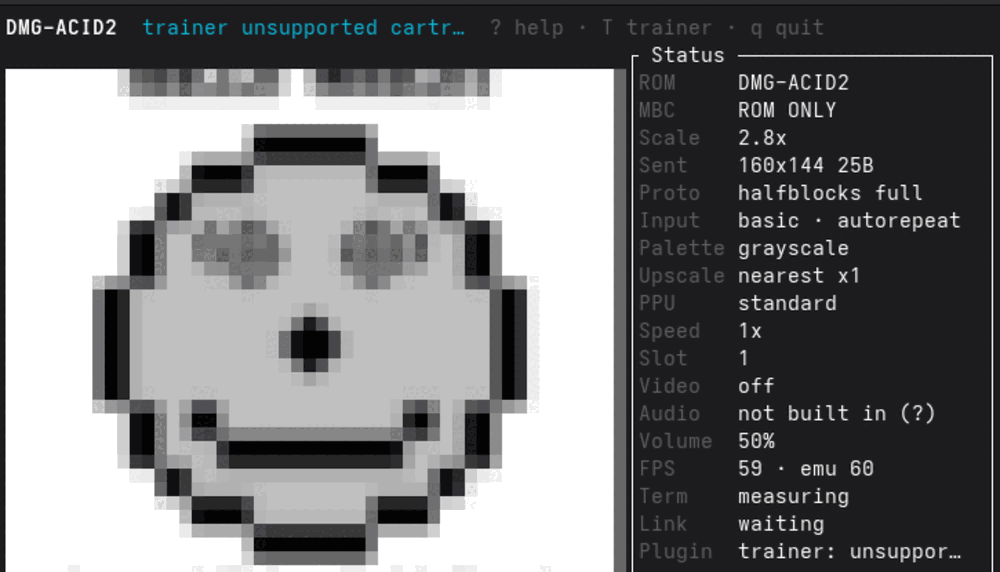
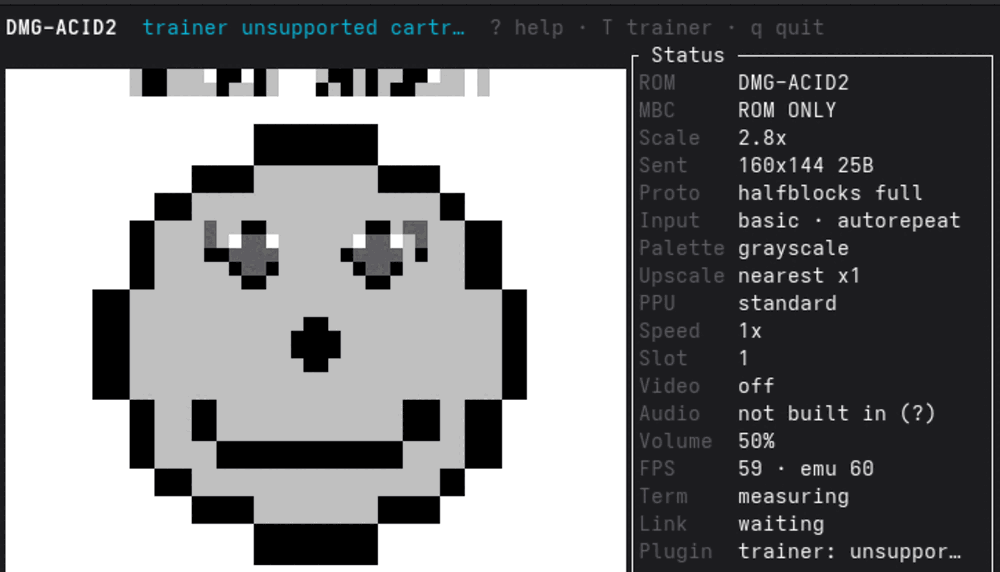

TerminalGB · Rendering
271 colours in a four-shade picture
A Game Boy screen has four shades in it. On GNOME-family terminals TerminalGB was drawing it with 271, and the picture looked soft in a way that should have been impossible.
A terminal that speaks no image protocol gets the picture drawn out of the
upper-half-block glyph ▀. The foreground colour paints the top half of
a character cell, the background paints the bottom, two vertical pixels per cell.
That is crisp by construction — a cell is two flat colours and there is nothing
inside it that can be soft.
And yet on Ptyxis it was visibly blurry, and on WezTerm it was not. Same binary, same ROM, same scale.
Before · render_path = legacy

After · default path

Both captures in Ptyxis 50.1 at 80×24 cells, 2.8× scale, one binary, two render paths.
The softness was never in the glyph
It was in the sampling, four lines down in a dependency:
let img = img.resize_exact(rect.width as u32, (rect.height * 2) as u32,
FilterType::Triangle);ratatui-image-4.2.0/src/protocol/halfblocks.rs. The same crate's
Sixel encoder does no such thing, and Resize::Scale's own default
filter is FilterType::Nearest. Half-blocks was the one path with a
filter baked in — which is why WezTerm, on the Sixel path, looked right.
Measured on dmg-acid2 at 80×24 cells: 271 distinct colours, 268 of which no Game Boy shade maps to.
The fix samples the cells directly, nearest-neighbour at pixel centres, the same
rule the video scaler already used. It also writes a uniform cell as a space
rather than ▀, so a font with a poor block glyph cannot soften the
large flat areas a Game Boy picture is mostly made of.
Doing the work ourselves is cheaper
This is the part that surprised me. The new path pays a full sampling cost on every frame and still wins: over roughly 1,070 frames at 146×54 cells, same ROM and window both sides, whole-frame time went from 0.460 ms to 0.349 ms.
It replaces two image-crate resizes — a nearest upscale to the
display's pixel size, then a Triangle downscale back to the cell grid. One pass of
arithmetic beats two passes of somebody else's.
The guard is a property, not a pixel
Blur has now been reported twice here, so the regression test asserts the thing that matters: every colour on screen must be a colour that was in the framebuffer. No interpolating resampler can satisfy that.
One unit test runs a one-pixel checkerboard — the worst case for a smoothing filter — at five window sizes. One end-to-end test drives the real render on dmg-acid2 at four.
The same trap, one repository over
PixelGB extracts map art from a running cartridge and guards its output on the same rule — no colour may appear that was not in the source — and cites this incident as the reason.
The timing figures come from the emulator's own opt-in telemetry over roughly 1,070 frames at 146×54 cells, same ROM and window both sides. The screenshots were taken in Ptyxis 50.1 on the machine the fix was made on.
← Back to devlog